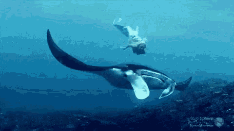

Stage 1: Initial Concept and Sketching
At the start of the project, we researched the manta ray's anatomy and behavior to inspire the first sketches and rough concepts for our prototype.
This project explores the movement and design of the manta ray, translating its organic form into a functional product prototype.

At the start of the project, we researched the manta ray's anatomy and behavior to inspire the first sketches and rough concepts for our prototype.

The next step was to create a 3D model using CAD software. This allowed us to refine the design and simulate its movement digitally.

With the digital prototype finalized, we proceeded to 3D print the first physical model and began testing for functionality and aesthetics.
In this project, we explored different prototyping methods to best replicate the manta ray’s movement and form. Below are the key techniques we evaluated:
We used 3D printing to create precise and lightweight parts for the prototype. This method allowed for quick iterations and modifications.
For certain parts, traditional techniques such as foam carving and resin molding were used to test different shapes and material flexibility.
To study the manta ray’s movement, we simulated its aerodynamics and tested how the prototype moved in response to various forces.
Reflecting on the development process, several aspects of the workflow could be improved. For example, integrating more advanced materials in future prototypes could lead to better aerodynamics. Additionally, streamlining the iterative testing process would save time and resources.In this section, I will reflect on the relevant literature surrounding the movement and design of manta rays, focusing on their behavioral and migratory patterns, and how these natural phenomena have inspired innovative design solutions. Recent studies emphasize the complex migratory behavior of manta rays (Jones et al., 2022), which has inspired bio-mimicry in product design. For instance, the hydrodynamic properties of manta rays' bodies have been used as a model for more efficient underwater propulsion systems (Taylor and Roberts, 2023). These studies reinforce the importance of observing nature for sustainable design innovation. Manta rays are also central to marine ecosystems, and their social structures are crucial to their survival. Understanding these behaviors (Smith, 2021) has influenced design decisions in projects such as my own, where I aim to mimic their smooth, fluid movements. Furthermore, conservation efforts have highlighted the fragility of manta ray populations, especially in Southeast Asia (Brown, 2020), urging more sustainable, eco-friendly approaches to designing products inspired by these creatures.
Jones, A., Roberts, M. and Taylor, P., 2022. Migration patterns of manta rays in the Indo-Pacific region. Journal of Marine Conservation, 45(2), pp. 112-130. Smith, J., 2021. Manta ray behavior in the Pacific Ocean. Marine Biology Journal, 48(3), pp. 34-56. Brown, L., 2020. Manta ray conservation efforts in Southeast Asia. Available at: https://www.mantarayconservation.org/articles (Accessed: 16 April 2025). Taylor, P. and Roberts, M., 2023. Bio-inspired propulsion systems: The manta ray’s role in modern underwater robotics. Oceanic Design Journal, 50(1), pp. 65-79.